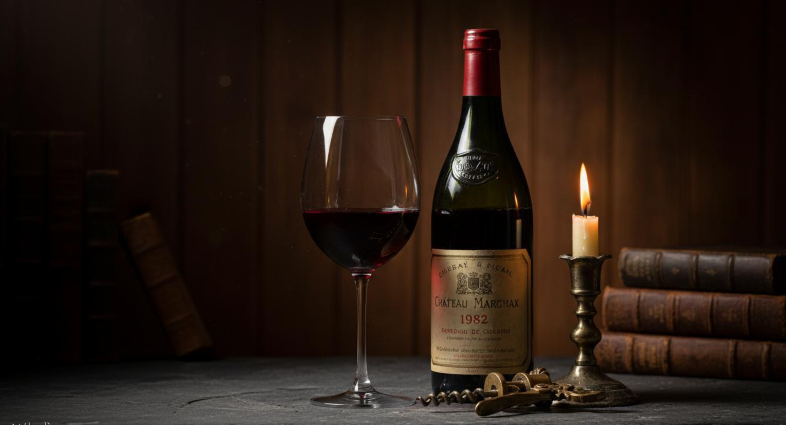
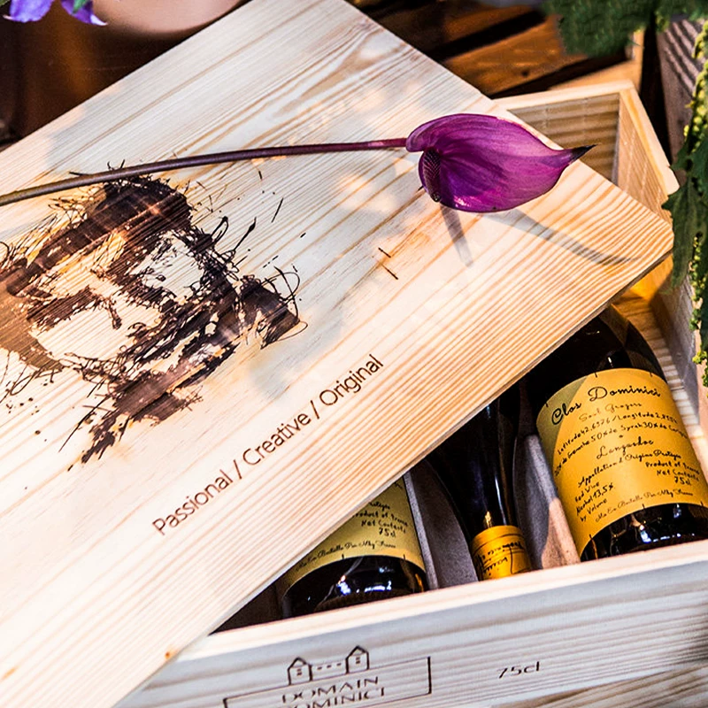
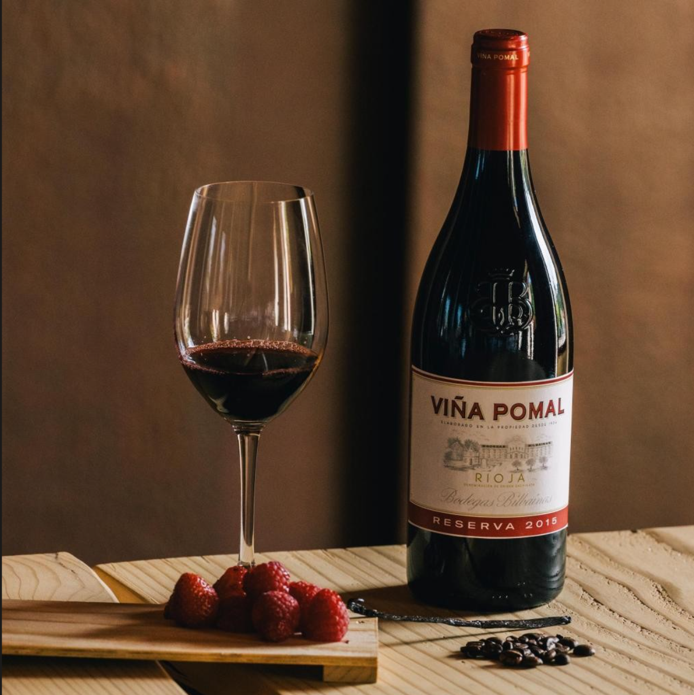
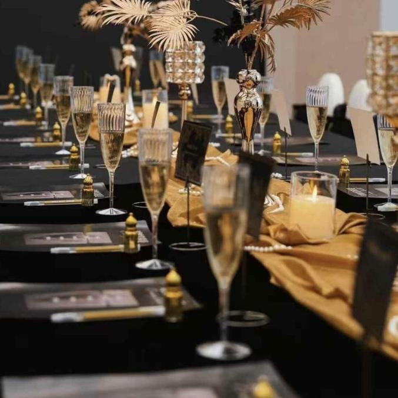
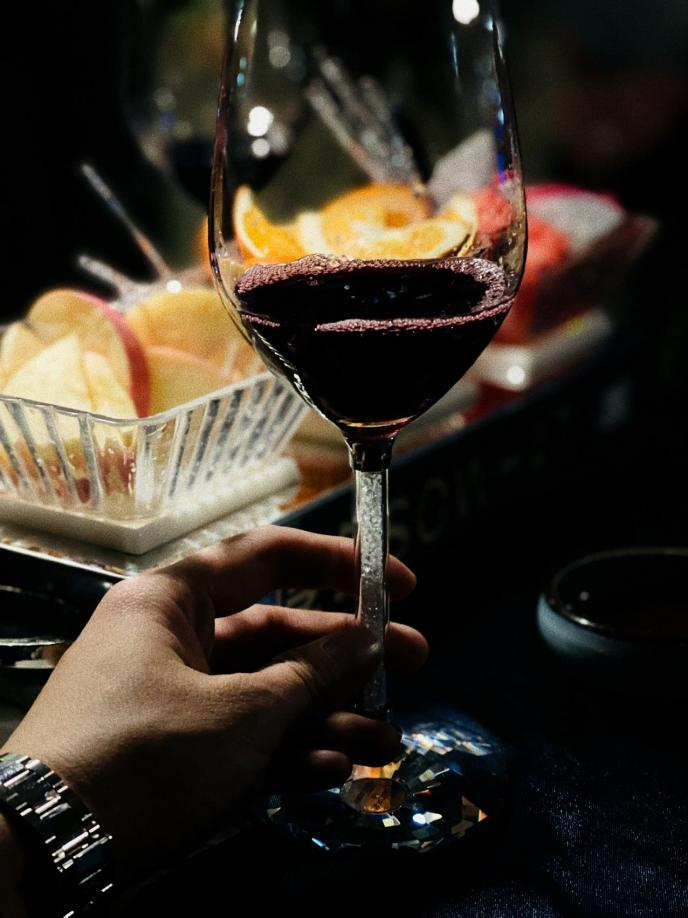
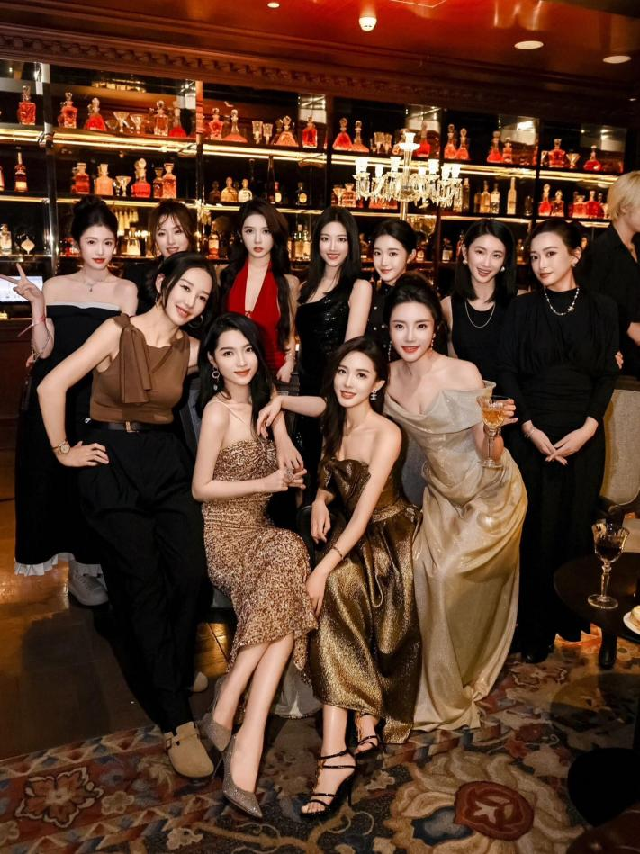
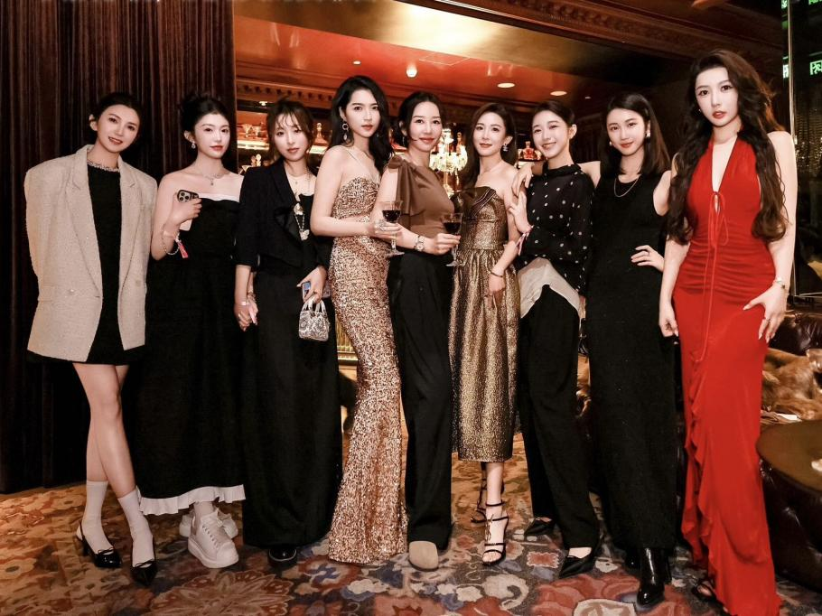

从一杯酒，到一群人，再到一份事业
萄野，始于一个简单的想法
葡萄酒不该是高高在上的学问，而应该是触手可及的生活。
我们从全球优质产区直采，用心情和场景重新组织选酒逻辑，
每一瓶进入萄野的酒，都经过严格的品质把关，
让每个人都能轻松找到，属于自己的那一瓶。


品酒会
我们在线上帮你找到了属于自己的那一瓶
现在，我们想在线下，陪你一起打开它
当波尔多的醇厚遇见勃艮第的优雅，当法兰西的浪漫在杯中流淌，有些夜晚，不需要太多语言，一杯好酒，便是最好的陪伴
暂别城市的喧嚣，步入别墅私享空间，在摇曳的烛光与醇厚的酒香中，感受法国葡萄酒的千年风土与酿造智慧，开启一场味蕾与思想的深度碰撞


在专业品酒师的引导下，深度品鉴来自法国波尔多、勃艮第、罗纳河谷等核心产区的AOP级佳酿。
从赤霞珠的强劲到黑皮诺的细腻，从霞多丽的圆润到西拉的浓郁，感受法国原产地命名保护（AOP）体系下的顶级风土与品质保证。
带您走进法国葡萄酒的世界，解读AOP等级背后的风土密码、酿造工艺与品鉴精髓。学习如何通过观色、闻香、品味，读懂每一款酒背后的故事，成为真正的法国葡萄酒鉴赏家
葡萄酒创业联盟
品酒会让我们聚在一起，创业联盟让我们走得更远
GWBA 不仅提供优质酒水供应链
更提供人脉、培训和变现路径
让葡萄酒爱好者，也能成为葡萄酒创业者
1、关于 GWBA
Global Wine Business Alliance（环球葡萄酒创业联盟）
集结一群充满活力、热爱美好生活的红酒赛道创业者
直接在全球各地搜罗源头好品质的葡萄美酒，产品来自八大葡萄酒生产国，包括法国、意大利、智利、澳大利亚、阿根廷、德国、西班牙等
与中国意大利农业区达成战略合作关系
绝对的价格优势、品类丰富、超百款产品、强大的仓储物流体系、完善的创业帮扶体系
2、GWBA 组织品爱漫卷的初心
推广品质优质、性价比高的酒水佳酿
为生活增添更多浪漫的光彩
希望以酒会友，广交更多能人士
打造一个正能量、积极、真诚、友善的社交场域
为葡萄酒从业者寻找职业及副业方向提供优质平台
通过专业人脉、赋能体系、供应链资源，构建切实可行的闭环创业选择


3、期待遇见这样的你
热爱生活、爱折腾、积极正向、不懒散的朋友；
尊重知识、愿意真诚交友、共同学习葡萄酒知识的朋友；
有自我提升意识，希望突破认知局限、提升生存认知的破圈精神者；
寻找副业、创业好机会，对葡萄酒千亿市场感兴趣的同频者